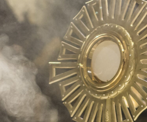
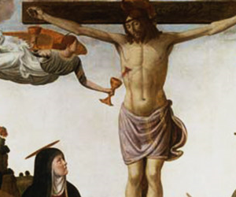
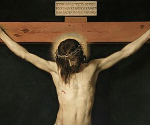
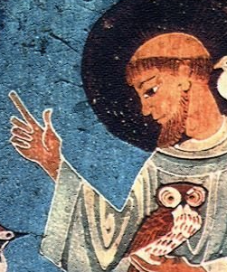
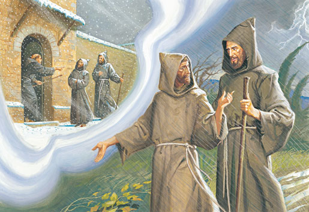

-
Adoro te Devote
Santo Tomás de Aquino
Conta-nos o amor ao Santíssimo Sacramento!
-
Stabat Mater Dolorosa
Giovanni Battista Pergolesi
Façamos companhia a Virgem aos pés da Cruz
-
Anima Christ
Santo Inácio de Loyola
Oração destinada ao Cristo Eucarístico!
-
Tarde te amei
Santo Agostinho
Poesia sobre a beleza das belezas!
-
Cântico das Criaturas
São Francisco de Assis
Cântico de São Francisco sobre as criaturas de Deus!
-
A Perfeita Alegria
Jufra do Brasil
São Francisco de Assis nos explica a Perfeita Alegria